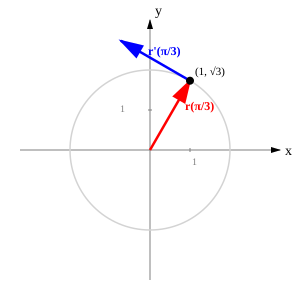
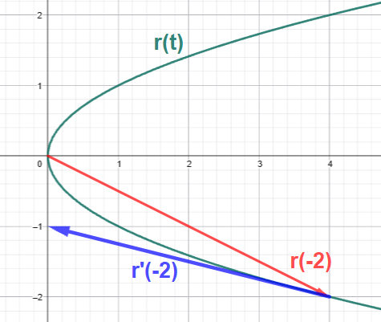

Homework Section 13.2 - Answers
-


-
- `bb(r)'(t) = 2bb(i) - bb(j) - 3bb(k)`
- `bb(r)'(t) = << 2t, -5/t^2, 1/sqrt(2t-1) >>`
- `bb(r)'(t) = 2bb(i) + 3e^(3t)bb(j) + 2cos t sin t \ bb(k)`
- `bb(r)'(t) = 1/(e^(2t)+1)^2 << sqrt(2)e^t(1-e^(2t)) , 2e^(2t), 2e^(2t) >>`
-
- `bb(T)(4) = 4/sqrt(89) (2 bb(i) - bb(j) + 3/4 bb(k))`
- `bb(T)(pi/6) = 1/sqrt(5) << 1, sqrt(3), -1 >>`
- `x = 8 + 2t`, `y = -3 - t`, `z = -6 - 3/4t`
-
- `(-oo, oo)`
- `(-oo, 0) uu (0, oo)`
- `(1/2, oo)`
-
- `24bb(i) + 8bb(j) + 96bb(k)`
- `t^2 bb(i) + 1/3 e^(3t) bb(j) + 1/3 cos^3 t \ bb(k) + bb(C)`
- `bb(r)(t) = t^3 bb(i) + 2t^2 bb(j) + (t^5+1) bb(k)`